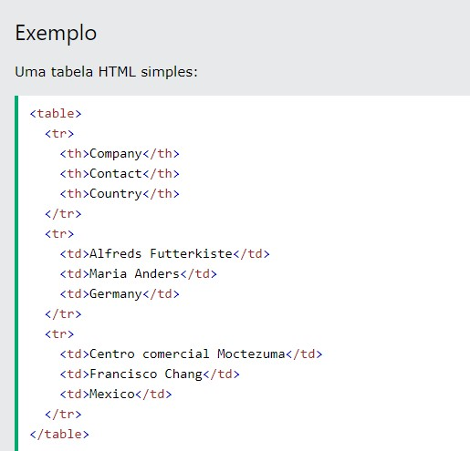

As tables (tabelas) permitem que os desenvolvedores da web organizem os dados em linhas e colunas. Células de tabela dentro de linhas e colunas. TR representam as linhas, TH as colunas e TD os dados da tabela.
del define o texto que foi excluído de um documento. Os navegadores geralmente riscam uma linha no texto excluído. Essa TAG suporta também atributos globais e de evento em HTML. exemplo
ins define um texto que foi inserido em um documento. Os navegadores geralmente sublinham o texto inserido. exemplo
sub define o texto subscrito. O texto subscrito aparece meio caractere abaixo da linha normal e, às vezes, é renderizado em uma fonte menor. O texto subscrito pode ser usado para fórmulas químicas, como H2O.
sup define o texto sobrescrito. O texto sobrescrito aparece meio caractere acima da linha normal e, às vezes, é renderizado em uma fonte menor. Texto sobrescrito pode ser usado para notas de rodapé, como WWW. Exemplo: 32